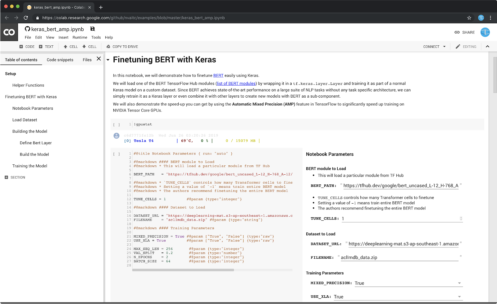
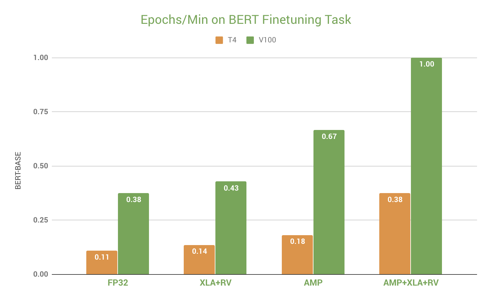
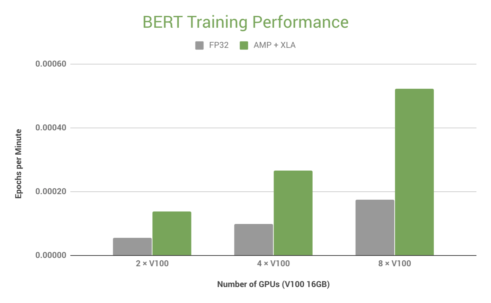

BERT (Bidirectional Encoder Representations from Transformers) is a state-of-the-art NLP model. Since BERT achieves state-of-the-art performance on a large suite of NLP tasks without any task specific architecture, we can finetune it to solve new problems. You can learn more about BERT by reading the paper on ArXiv.
In these examples, we will be wrapping BERT in a Keras layer. Keras is an easily to use deep learning library. Wrapping BERT as a Keras layer gives us the flexibility to use BERT by itself, or as a larger Keras model that only uses BERT as a sub-component. We will be using the implementation of Keras that ships as part of TensorFlow (tf.keras), as well as automatic mixed precision (AMP) to significantly speed up training (about 3x) on NVIDIA Tensor Core GPUs. We will also make use of the XLA compiler in TensorFlow to further increase the speed of model training. This enables us to quickly prototype and easily train custom BERT models.
The first section of the guide covers how to use the Google Colaboratory platform, also referred to as Colab. Colab is a free-to-use hosted Jupyter Notebook service by Google that also provides access to an NVIDIA Tesla T4 Tensor Core GPU for training deep learning models.
The second section of the guide covers how to use and on a server with multiple GPUs (such as a DGX-1 or a cloud VM with 8 GPUs). We will use Horovod (a distributed training library by Uber) to achieve efficient single-node, multi-GPU training, dramatically shortening the time it takes to train a BERT model.
{ Colab intro }
Introduce parts of notebook
Introduce key points about bert code

Talk about key points about AMP + XLA + RV speeding up the code

Benefits of training on a multi-GPU NVIDIA server

DGX pitch
NVLink
Nvidia-docker
Before we move on to multi-GPU training on a server or a cloud VM, here are some important system requirements to ensure that your server or cloud VM meets the following system requirements
It is very important that you verify that you meet the following system requirements:
418.x as of March 2019)nvidia-docker)To check your GPU driver, try running nvidia-smi. If you get a command not found error, then you do not have the NVIDIA GPU driver installed. If you do, check the driver version (top of the output). It you need to have driver 410.x or newer, unless you are using the enterprise driver.
Introduce Horovod
Introduce key parts of training script that differ from colab
Explain how to run
Congratulations! You have reached the end of this guide.